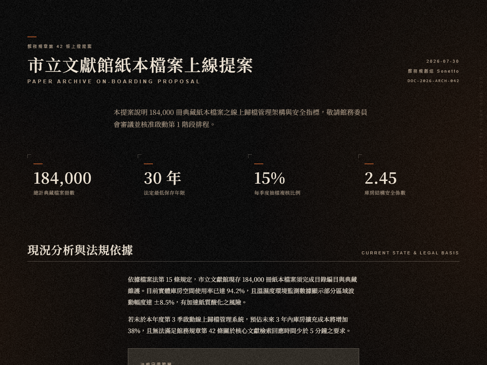
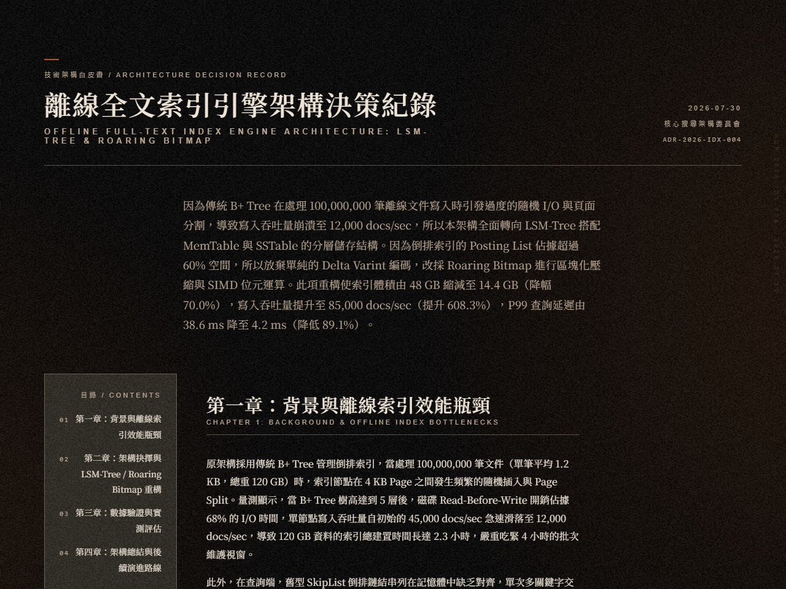
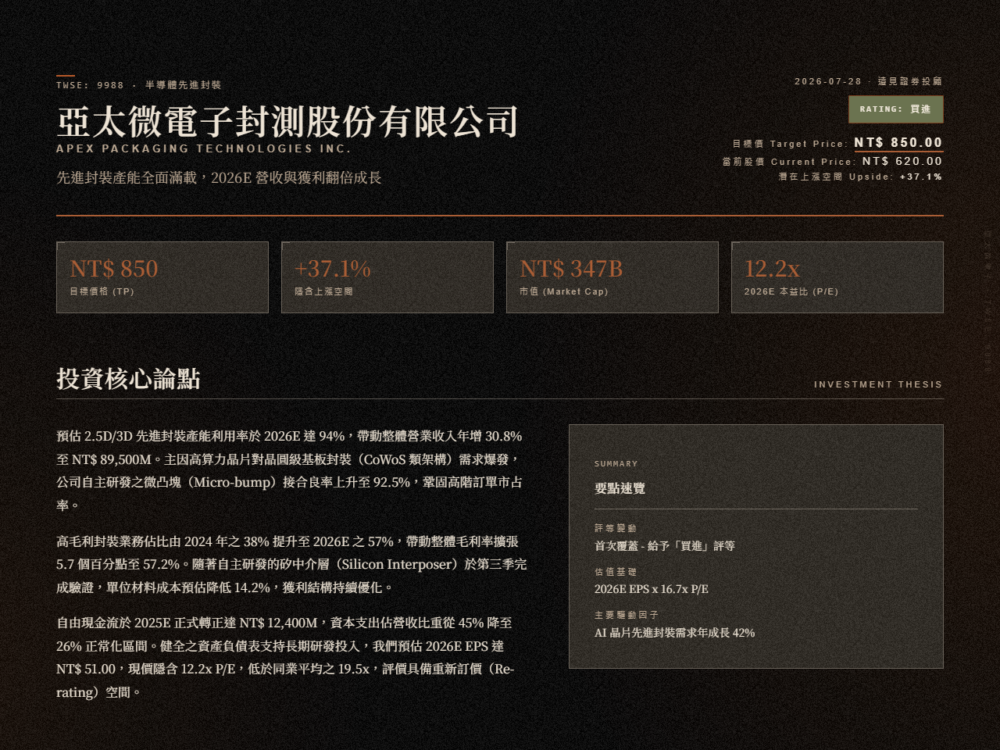
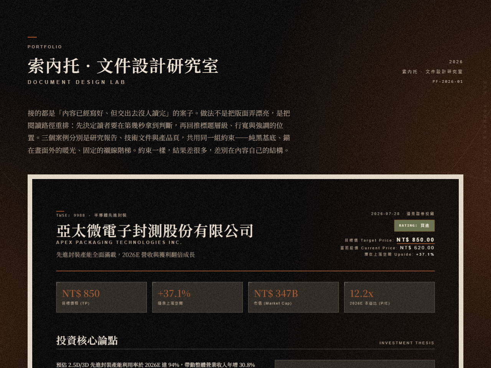
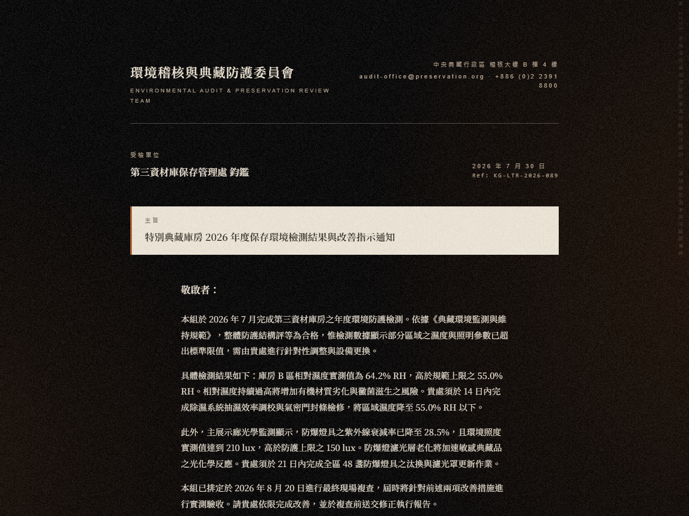
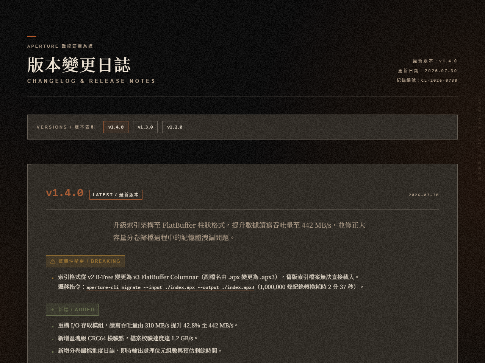
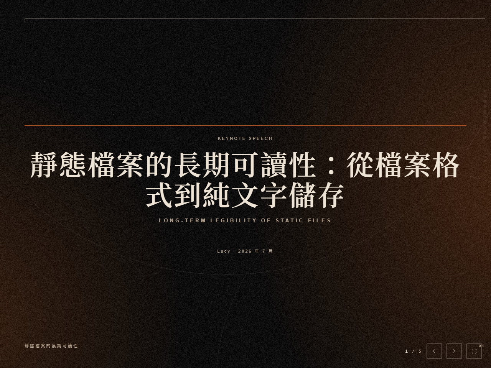
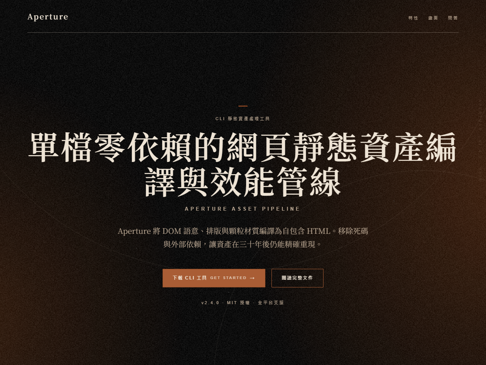

光在畫面外，影在畫面裡。
「影 · kage」是專為 AI 代理設計的文件生成 skill。給予需求敘述，即自動產出結構完整、視覺排版嚴謹的純螢幕 HTML 文件。系統涵蓋 8 種類型與 2 語軌，共 16 份模板，透過 45 個單一真相來源的色彩 token 與 OFL 授權的 Noto Serif TC 字型，消除數位畫面的過度銳利感。
00 · 展示
八種類型，每一份都是真實產出
涵蓋 8 種類型與 2 語軌，共 16 份範例，均為 AI 代理直接產出的 HTML 檔案。








上述 8 份點擊即可開啟完整 HTML 頁面。模板不依賴外部 CSS 庫，共用區塊在 16 份模板間 100% 逐字一致。
01 · 用法
需求到 HTML 的精準映射
只需輸入意圖，系統會自動在 1 個指令中分配至 8 種類型之一並選用繁中或英文語軌產出。
「影 · kage」涵蓋 8 種類型：單頁摘要、長篇報告、個股研報、作品集、商務書信、更新日誌、簡報與產品頁。每種類型皆有獨立的 JSON Schema 內容契約與字數上限，確保 AI 產出的文案結構紮實，不含廢話。
所有 16 份模板均為單檔自包含 HTML，共用 45 個色彩 token 與全域 CSS 樣式。無需編譯器或外部前端框架，生成的檔案可直接在任何現代瀏覽器中開啟或歸檔。
02 · 宣言
紙張、底片與物理世界
3 條設計鐵律，重新定義數位文件的質地與精神。
重建物理觸感：畫面不該是純白或死黑，而是由 #000000 堆疊顆粒後產生的 12.8 合成明度。
消除數位銳利度：透過 SD 7.4 的無彩顆粒與 18–30° 漏光，給予冷螢幕溫度與雜誌般的沉浸感。
克制勝於裝飾：裝飾語彙嚴格限制為 4 種，且弧線與刮痕採 2 選 1 互斥機制。
03 · 色彩
45 個 Token 構成的沉靜調色盤
全系統共 45 個色彩 token，作為單一真相來源。繪製基色為 #000000，疊加顆粒後合成明度約 12.8。漏光色相鎖定在 18–30° 暖色區段，核心錨定於畫面之外，畫面內僅保留衰減尾端。
基底與漏光Base & Leak
#000000
繪製基色。合成後約 luma 12.8
luma 0.0
#1a1210
漏光最外緣
luma 19.6
#26170f
中段
luma 25.6
#331c0f
主體
luma 32.0
#432513
邊緣峰值
luma 42.1
#683e1d
最亮點，面積 < 0.5%
luma 68.5
文字Text
#eee4d5
正文
luma 229.0
#bba893
次要與中繼資料
luma 170.5
#a95d35
強調。24px 以下禁用
luma 106.3
表面與材質Surface & Material
#29241e
深色卡片表面
luma 36.6
#e8dfcf
淺色紙張，累計面積 ≤ 25%
luma 223.8
#d8c8aa
書信專用紙色
luma 201.2
#424242
塵點
luma 66.0
#56524d
刮痕
luma 82.5
04 · 字體
襯線體賦予的雜誌印刷感
採用自架 OFL 授權的 Noto Serif TC，標題與正文全面使用襯線體。無襯線體僅在 3 處承擔功能性標籤：導覽、日期與序號。
光的衰減落在畫面邊界，文字在靜謐中建立秩序。
大標光的衰減落在畫面邊界，文字在靜謐中建立秩序。
章標光的衰減落在畫面邊界，文字在靜謐中建立秩序。
節標光的衰減落在畫面邊界，文字在靜謐中建立秩序。
小節光的衰減落在畫面邊界，文字在靜謐中建立秩序。
導言光的衰減落在畫面邊界，文字在靜謐中建立秩序。
正文光的衰減落在畫面邊界，文字在靜謐中建立秩序。
附註光的衰減落在畫面邊界，文字在靜謐中建立秩序。
圖說光的衰減落在畫面邊界，文字在靜謐中建立秩序。
標籤襯線體具備明確的橫豎筆劃對比，在 1280×800 視窗中打破螢幕像素的冰冷感，為文字帶來如實體雜誌般的閱讀節奏。
05 · 材質
4 層堆疊的深邃光影背景
背景是四層疊加：繪製基色、暖色漏光、可選的中央沉暗層，以及永遠置頂的顆粒。弧線與塵點是裝飾母題，不屬於這四層。
數位畫面的硬傷在於純色區域的死板與銳利。為了營造實體感，我們使用固定種子產生的 200×200 灰階 PNG 顆粒，疊加後產生標準差 7.4 的無彩雜訊。
漏光漸層依據 3 類頁面等級調整強度：敘事型最高設為 24%/19%，閱讀型則降至 10%/8%。光源核心始終位於畫面外部，保持中央正文欄明度低於 20。
06 · 母題
4 種嚴格約束的視覺裝飾語彙
裝飾語彙包含 4 種：幾何細線與弧線、塵點、鏡像重影與邊緣編目微型字。弧線與斷續刮痕實施 2 選 1 互斥機制，塵點總面積控制在 0.1% 以下，確保視覺元素不干擾閱讀。
07 · 元件
克制且具備層級感的 UI 模組
包含按鈕、引言區塊與紙張表面卡片 3 種元件，皆符合 4.5:1 對比度規範。
08 · 驗收
8 條嚴格可量化的自動檢查點
建置管線透過腳本自動校驗 8 項視覺物理指標，確保 16 份模板輸出完全符合設計規範。
- 01
1. 反向暗角分佈畫面中央 20% 區域明度必須低於四周邊緣 10% 區域。
- 02
2. 邊緣穩定度跨截圖邊緣明度波動幅度必須控制在 ±10% 以內。
- 03
3. 明度面積佔比明度 ≥48 佔比 < 4%、≥80 < 0.15%、<32 ≥ 84%。
- 04
4. 顆粒標準差疊加顆粒後明度標準差必須在 6–14 之間，基準值為 7.4。
- 05
5. 三通道無彩驗證RGB 三通道殘差振幅差異必須小於 5%，確保顆粒無彩。
- 06
6. 乾淨區低頻殘差乾淨區域 64/128px 尺度殘差必須小於 0.7，排除低頻斑駁。
- 07
7. 背景色相區間背景色相座標僅能落在 18–30° 暖色或 180–192° 冷灰區。
- 08
8. 正文欄明度約束正文欄低頻明度 p99 ≤ 20 且 p99−p1 ≤ 8，保證閱讀對比。
09 · 問答
關於「影 · kage」的常見問題
解答有關系統定位、生成範疇、美學來源與顯影模式的 4 個核心疑問。
- 1. 「影 · kage」是什麼？
- 「影 · kage」是一個專門生成美觀 HTML 文件的 AI Agent Skill。它不是產品落地頁產生器，而是一套包含 16 份模板與 45 個色彩 token 的完整文件設計系統。
- 2. 「影 · kage」能生成什麼？
- 支援 8 種類型：單頁摘要、長篇報告、個股研報、作品集、商務書信、更新日誌、簡報與產品頁，繁中與英文雙語軌共 16 份純螢幕 HTML 模板。
- 3. 核心美學精神是什麼？
- 美學源自老底片膠卷與經典電影的物理質感。透過 #000000 基色、7.4 標準差無彩顆粒與 18–30° 邊緣漏光，將數位螢幕的銳利高頻轉化為具備時間沉澱感的雜誌與電影畫面。
- 4. 什麼是顯影模式？
- 顯影模式（develop）是一種冷澈的物理觀察者視角，將主觀宣示轉譯為可觀察的物理紀錄。此模式屬於罕用的可選語域，預設關閉，必須由使用者在需求中明確指定才啟用。